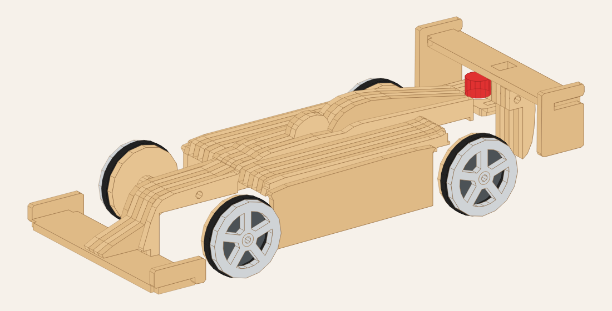
| Madera (MDF o terciado de 3 mm) | Electrónica y otros |
|---|---|
|
|
El chasis es igual para todos los modelos. Las piezas encastran: las pestañas entran en las ranuras. Si entran muy justas, lijá un poquito la pestaña. Si quedan flojas, poné una gota de cola.
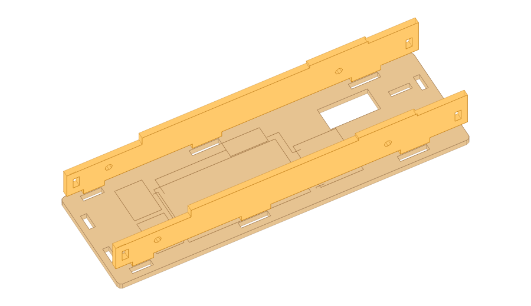
Poné el PISO con los dibujos grabados hacia arriba (la palabra FRENTE va adelante). Encastrá los dos LARGUEROS (los que tienen 2 agujeros para los ejes) en las ranuras de los costados.
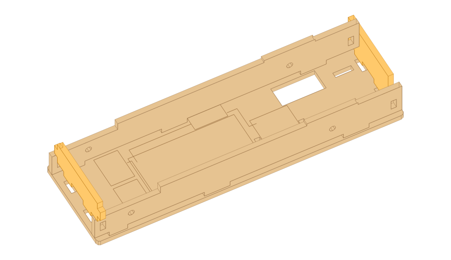
Encastrá el TRAVESAÑO DELANTERO (TD, el más bajo) adelante y el TRASERO (TT) atrás. Sus pestañas entran en el piso y en los largueros. Ahora es buen momento para poner cola en las uniones.
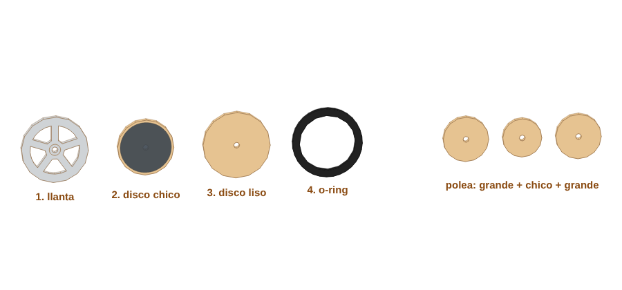
Cada rueda son 3 discos: la llanta (con rayos) afuera, el disco chico en el medio y el disco liso adentro. Pegalos con cola, alineando los agujeros con un palito. Cuando sequen, poné el o-ring en la canaleta: es la cubierta. La polea se arma igual: disco grande + chico + grande.
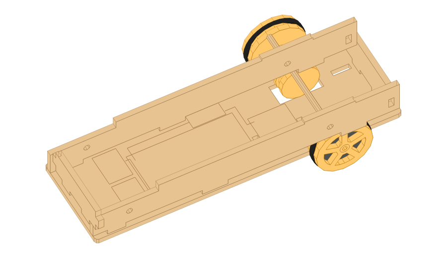
Pasá un palito de 80 mm por el agujero de atrás de un larguero, metele la polea por adentro del chasis y seguí hasta el otro larguero. Afuera, en cada punta: 2 arandelas y una rueda a presión. El eje tiene que girar libre en los largueros; las ruedas y la polea, en cambio, quedan firmes en el eje (si bailan, una gota de cola).
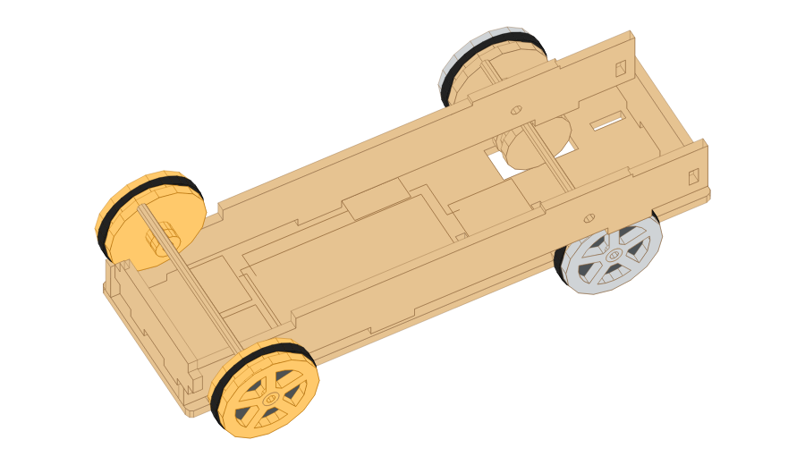
Igual que el trasero, pero sin polea: palito, 2 arandelas y una rueda en cada punta.
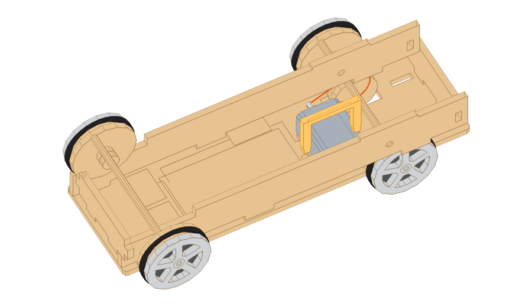
Apoyá el motor en el piso, sobre el dibujo que dice MOTOR, con el eje hacia la polea. Calzá el SOPORTE MOTOR encima (sus patitas entran en el piso). Pasá la gomita por el eje del motor y por la canaleta de la polea. Mové la polea sobre el eje hasta que quede justo enfrente del eje del motor.
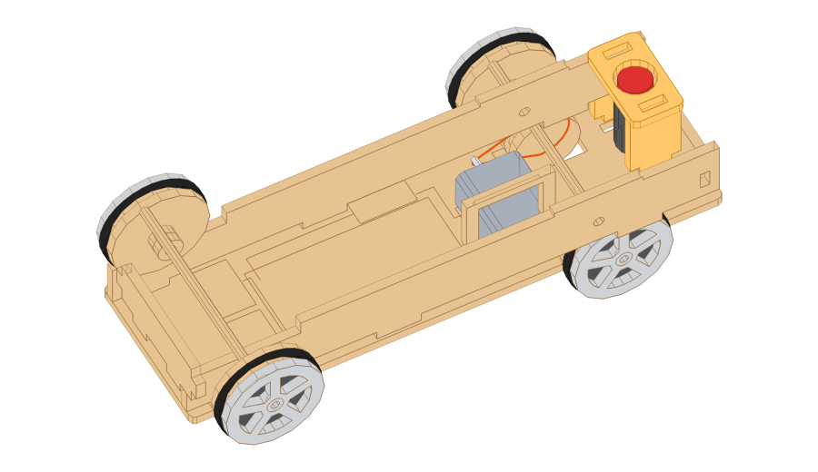
Encastrá los 2 laterales de la TORRE en el piso y poné la tapa arriba. Atornillá el pulsador en el agujero de la tapa (la tuerca va por abajo). Los cables del botón bajan por adentro de la torre.
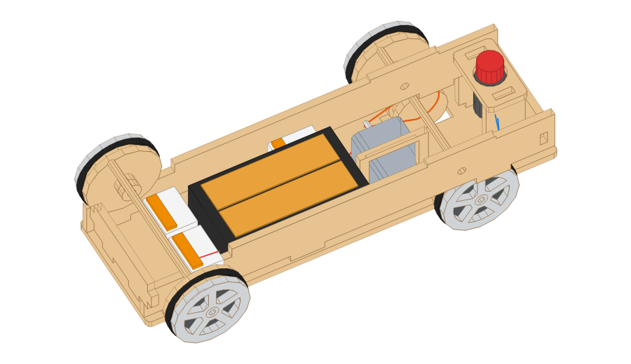
Pegá el portapilas con cinta doble faz sobre el dibujo PILAS. Los bornes van en los lugares marcados B1, B2 y B3. Para conectar: levantá la palanquita del borne, meté el cable pelado (1 cm sin plástico) y bajá la palanquita. Seguí este dibujo:
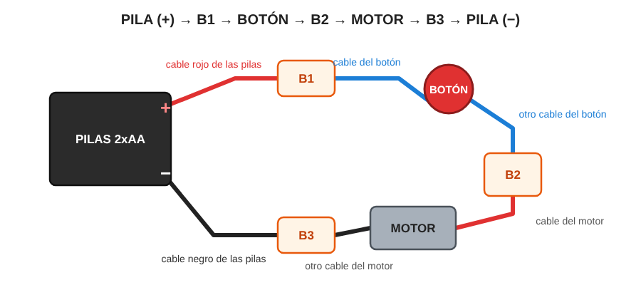
| Borne | Cables que van juntos |
|---|---|
| B1 | Rojo (+) de las pilas y un cable del botón |
| B2 | El otro cable del botón y un cable del motor |
| B3 | El otro cable del motor y el negro (−) de las pilas |
Pasá los cables pegados al piso, lejos de la polea y la goma.
Poné 2 pilas AA y apretá el botón: las ruedas de atrás tienen que girar. Volvé a apretar: se apaga.
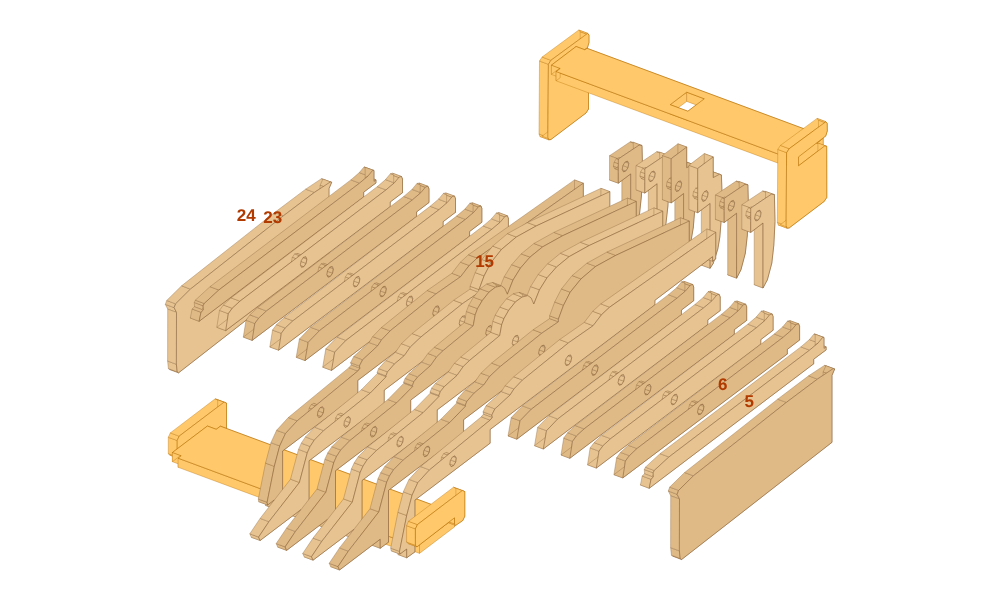
Las capas tienen el número grabado (en la parte que queda tapada). Se apilan de la 1 (costado izquierdo, la que tiene los detalles grabados) a la 28 (costado derecho). Las piezas que dicen (espejo) en la hoja ya vienen dadas vuelta: el lado grabado va hacia afuera. Algunas capas vienen en 2 partes (a y b): van una detrás de la otra, en la misma capa.
Pernos: usá palitos de brochette como pernos para que las capas queden alineadas. Cortalos a estas medidas:
| Perno | Largo | Pasa por |
|---|---|---|
| A | 48 mm | capas 7 a 22 |
| B | 18 mm | capas 12 a 17 |
| C | 18 mm | capas 12 a 17 |
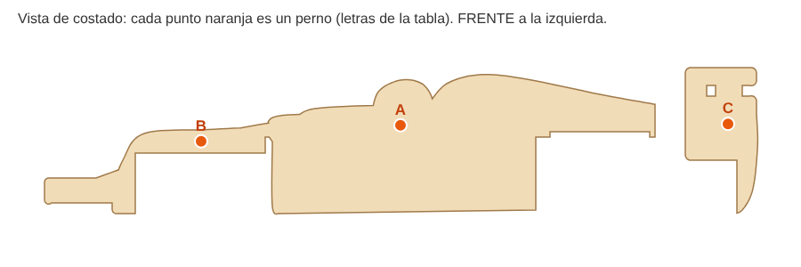
Andá poniendo cola entre capa y capa (poca, con un pincel) y apretá. Dejá secar 2 horas con peso encima.
Lijá los cantos con lija 220 hasta que queden suaves y sin hollín. Terminá con barniz al agua o cera de abejas. Si lo pintás, usá acrílico al agua (no tóxico). No pintes ni barnices adentro, donde apoya en el chasis, así no se pega.
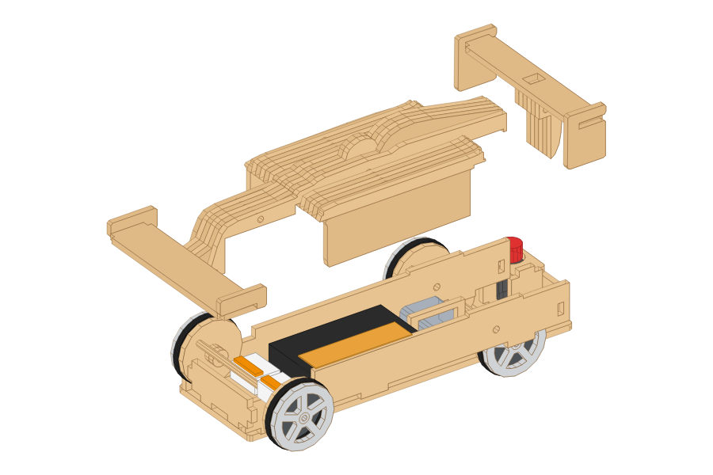
Bajá la carrocería sobre el chasis: apoya sobre los largueros y el botón asoma por el agujero de atrás. Para cambiar las pilas o ver el motor, levantala. Para llevar el auto, agarralo de abajo (del chasis).
| Medidas | 20 cm de largo, 8,4 cm de ancho · escala 1:24 |
| Material | 1 hoja de 60 x 20 cm de MDF o terciado de 3 mm |
| Piezas | 64 |
| Corte láser | 11.3 m de corte, 17 cm² de grabado lleno, 0.3 m de grabado de línea · unos 11 a 17 minutos (estimado) |
| Peso de la madera | unos 113 g en MDF (el terciado es más liviano) |
| Circuito | 2 pilas AA (3 V) → pulsador con traba → motor 130 |
Diseño propio, genérico. No usar nombres ni logos de marcas de autos.